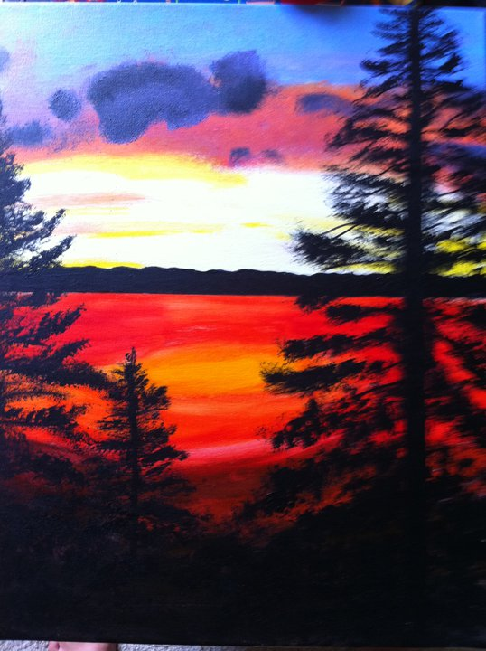

Extras
“The only way to deal with an unfree world is to become so absolutely free that your very existence is an act of rebellion.” - Albus Camus
My Travels
Places I've been:
Australia (my dad was born in Sydney)
England
France
Mexico
Cuba
Martinique
Saint Lucia
Hondurus
Haiti
The Bahamas
My Art
Although I've never had any formal training in art, I have always loved to paint and draw since I was a kid.
Here are a few of my favorites:
Fun Facts
• I am left handed.
• I am conversationally fluent in French (working on it).
• I'm incredibly adventurous. I've climbed the Sydney Harbour Bridge in Australia, gone sky diving, been white water rafting and rappelling in Colorado, learned to surf, been ziplining over the canopies in Hondurus, and successfully passed Organic Chemistry.
• I'm the reigning Scrabble champion in my family and amongst my friends. It's one of my life goals to enter a tournament one day.